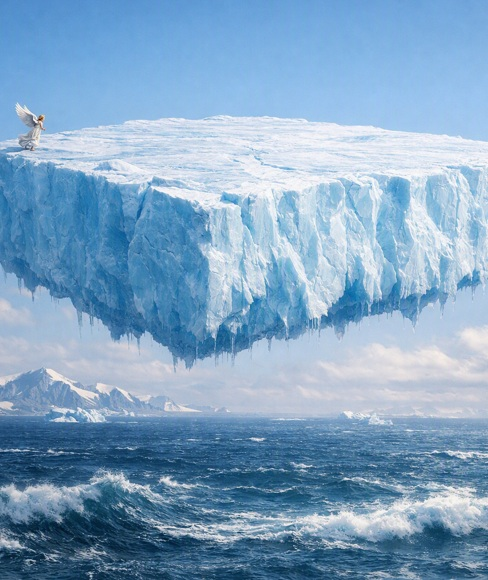

Then a mighty angel picked up a stone the size of a great millstone and cast it into the sea, saying: “With such violence the great city of Babylon will be cast down, never to be seen again. 22And the sound of harpists and musicians, of flute players and trumpeters, will never ring out in you again. Nor will any craftsmen of any trade be found in you again, nor the sound of a millstone be heard in you again. — Revelation 18:21-22
John described something “like” a great millstone being thrown into the sea. The word like simply means similar to, not identical. In John’s world, the largest object he could compare to was a millstone — a heavy stone used for grinding grain. He had no concept of glaciers, ice sheets, or continental slabs of ice collapsing into the ocean. Today, global warming is causing exactly that: enormous masses of ice breaking off and plunging into the sea. The ancient symbol aligns with the modern physical reality.
In Revelation, Babylon is not a single city. It is a worldwide way of life, a global system built on commerce, greed, and idolatry. Babylon represents a civilization that believes it cannot fall because it is wealthy, connected, and powerful. It blinds people with luxury and distraction, convincing them that everything is stable even as it quietly drains the world around it.
Babylon is portrayed as a marketplace overflowing with goods, a culture intoxicated by wealth, and a world order built on exploitation. It collapses suddenly, not because of an external attack, but because the system destroys itself from within. This pattern mirrors the modern world almost exactly. The global system today is built on commerce that never stops, greed that never slows, and idolatry that elevates comfort, entertainment, and wealth above truth.
Most people think global warming means the planet is simply getting hotter. That is true, but it is only the surface of the problem. Global warming is the breakdown of the planet’s entire life‑support system — the ecosystem and climate engine that make civilization possible.
It affects the air we breathe, the oceans that regulate temperature, the forests that create rainfall, the storms that distribute heat, the seasons that guide growth, and the ice that stabilizes the planet. It affects soil, rivers, plants, animals, and the delicate balance between them. Everything is connected. When one part breaks, the others begin breaking too.
The world ecosystem is a single interconnected network. Forests create rain and store carbon. Oceans absorb heat and support food chains. Ice reflects sunlight and keeps the planet cool. Soil holds nutrients and supports agriculture. Rivers carry minerals across continents. Seasons guide the growth of plants and the migration of animals.
This system is not a collection of separate parts. It is one giant, interconnected whole. When a major component collapses — such as a rainforest or coral reef — the shock spreads through the entire network. The ecosystem becomes less stable, less predictable, and less capable of supporting human civilization.
The climate system is the machinery that keeps the planet stable. Ocean currents move heat around the world. Jet streams guide weather patterns. Monsoons deliver seasonal rainfall. Storm tracks shift energy across oceans. Temperature zones determine where crops can grow. Humidity cycles regulate evaporation and precipitation.
Civilization depends on this stability. Without predictable seasons, farming fails. Without stable coastlines, cities flood. Without reliable rainfall, water systems collapse. The climate system is not just “weather.” It is the foundation of human life on Earth.
Many people believe global warming is a slow process that will become serious in the distant future. In reality, many parts of the world system are already past their limits.
Rainforests are drying and losing their ability to make rain. Coral reefs have died in many regions, altering ocean chemistry. Permafrost is melting and releasing methane, accelerating warming. Ice sheets are cracking and sliding faster every year. Ocean currents are weakening. Storms are becoming erratic. Humidity is rising worldwide. Seasons are shifting. Ecosystems are collapsing quietly, even when they still appear green from a distance.
The world system is not “in danger.” It is in transition — moving into a new state that cannot support civilization the way we know it.
A tipping point is a moment when a system becomes so stressed that it changes suddenly and permanently. Once a tipping point is crossed, the system cannot return to the way it was. This is not a gradual shift; it is a break.
When one tipping point is crossed, it pushes others forward. This creates a cascade — a chain reaction of failures. The Amazon rainforest, the Congo basin, and Southeast Asian forests are approaching or have already crossed their tipping points. Coral reefs have collapsed. Permafrost is thawing. The Greenland and West Antarctic ice sheets are destabilizing. The AMOC is weakening.
Each collapse accelerates the next. This cascading pattern is the physical version of Babylon’s fall.
If the East Antarctic Ice Sheet (EAIS), West Antarctic Ice Sheet (WAIS), Greenland, and the world’s glaciers collapse into the ocean, the consequences are straightforward.
Sea levels rise dramatically — not by inches, but by tens of meters. Entire coastlines disappear. Every major coastal city becomes uninhabitable. Nations lose their land. Islands vanish completely. Ocean currents break down as cold, fresh meltwater disrupts circulation. Weather becomes chaotic. Food systems fail as climate zones shift. Governments destabilize under the pressure of mass migration. Heat accelerates because ice, which reflects sunlight, is replaced by dark ocean water that absorbs it.
Civilization as we know it cannot survive this combination of changes.
“and every island fled away”
John described the effect: islands disappearing. Today we understand the cause: massive sea‑level rise from collapsing ice sheets. When tens of meters of water enter the ocean, islands do not sink slowly. They vanish. Coastlines drown. Nations disappear. The world map changes permanently.
This is exactly what Revelation describes. The imagery is ancient; the mechanism is modern.
Revelation’s Babylon is a global system built on commerce, greed, and idolatry. It collapses suddenly and cannot be rebuilt. The modern world is a global system built on consumption, extraction, and denial. It is crossing tipping points and cannot return to stability.
The symbolism and the physical reality align. Babylon falls under its own weight. So does the modern world.
John saw a massive object thrown into the sea, symbolizing the fall of a world system. Today, we see massive glaciers collapsing into the ocean, destabilizing the planet and ending the global system built on excess. The ancient metaphor and the modern mechanism describe the same event in different language.
Global warming is not just hotter weather. It is the collapse of the world system — the ecosystem, the climate engine, and the civilization built on them. Revelation describes Babylon falling. Global warming shows how it falls.
The “millstone” is the glacier. The “sea” is the destabilized ocean. The “fall of Babylon” is the collapse of the global system built on commerce, greed, and idolatry.
Like it or not, believe it or not — it's irrelevant. This is worldwide Babylon and it's foretold destruction has been ongoing for some time.